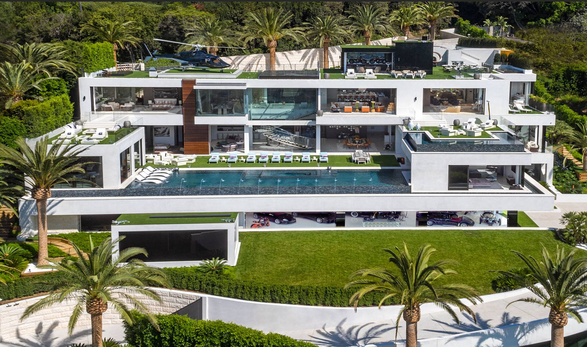
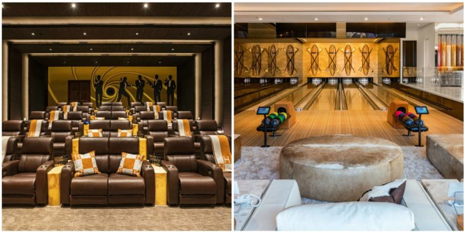
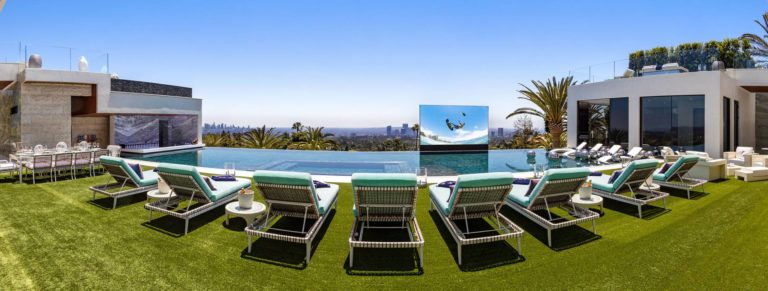

Mr Herick House
Descrição do Projeto
Esta é a humilde residência do Mr. Herick, um famoso prodígio brasileiro que ficou bilionário aos 32 anos de idade, quando lançou a famosa rede social EggBook que desbancou todas as outras redes sociais existentes, como Facebook, Instagram, Twitter, etc. tomando o controle da área e se tornando um monopólio.
A residência do Mr. Herick conta com 5 salas de cinema 8D, no qual você sente tudo o que está acontecendo no filme, inclusive podendo até vir a óbito caso alguém do filme morra, e também conta com 25 salas destinadas exclusivamente a recreação, podendo citar: Boliche, Paint Ball, Jogos Eletrônicos, Festa Rave, 50 tons de cinza, e muito mais!
Se somar todas as 59 piscinas existentes no terreno, é possível preencher 153 campos de futebol.
Essas são apenas alguns detalhes dessa incrível residência, toda projetada e executada pelo Especialista Engenheiro João Vitor Cenedeze.
← Voltar ao portfolio